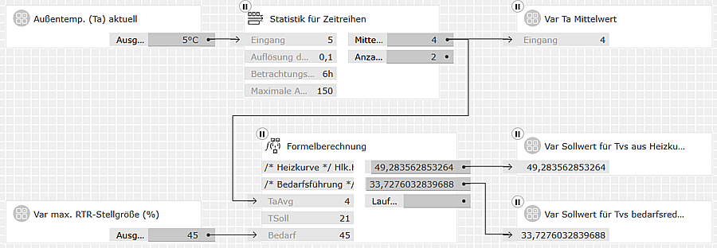

Formelberechnung – Heizungsregelung
Die Funktion HeatingCurve
Die Heizkurve, also die Festlegung der Vorlauftemperatur eines Heizkreises
je nach Außentemperatur, ist zentraler Bestandteil jeder Heizungsregelung.
| Funktion |
Datentyp |
Beschreibung |
|
Hlk.HeatingCurve(
TaAvg, Tg, TaMin,
TSoll, TvMax, k)
|
double
|
Errechnet aus der gedämpften (zeitlich gemittelten) Außentemperatur TaAvg
in °C und weiteren Parametern die benötigte Vorlauftemperatur für einen Heizkreis.
Die Parameter passen die Heizkurve an die Gegebenheiten des Gebäudes und der
Heizungsanlage an.
|
Die Parameter haben folgenden Bedeutungen und sinnvolle Wertebereiche:
- Tg
-
Heizgrenze, also die Außentemperatur Ta, bei der gerade noch nicht geheizt
werden muss. Ist TaAvg >= Tg, so gibt die Funktion 0 zurück,
um die Heizung abzuschalten. Die Heizgrenze hängt in erster Linie von der
Wärmedämmung und Luftdichtheit der Gebäudehülle, aber auch vom Wärmeeintrag
z. B. durch elektrische Verbraucher oder die Bewohner selbst ab. Wenn Tg
nicht aus den Auslegungsdaten der Heizungsanlage bekannt ist, können als
Richtwerte gelten:
- vor 1977
- 16..18
- 1977-1995
- 14..16
- nach 1995
- 12..15
- Niedrigenergiehaus
- 11..13
- Passivhaus
- 9..11
- TaMin
-
Minimale Außentemperatur Ta, für die die Heizungsanlage ausgelegt ist. Für
TaAvg <= TaMin gibt die Funktion TvMax zurück, um die
maximale Heizleistung zu erreichen.
- TvMax
-
Maximale Vorlauftemperatur, für die die Heizungsanlage ausgelegt ist, um
bei TaAvg == TaMin die Raumtemperatur Tsoll gerade
noch zu erreichen.
- k
-
Heizkörperexponent; bestimmt die Überhöhung der Heizkurve im unteren und
mittleren Bereich; kompensiert die geringere Wärmeabgabe von Heizkörpern
bei niedrigen Vorlauftemperaturen. Sinnvolle Werte liegen im Bereich 1 ..
1.5 und hängen von der Art der Heizkörper ab; z. B:
- Konvektoren
- 1.33
- Wandheizung
- 1.3
- Fußbodenheizung
- 1.1
- Lineare Heiz"kurve"
- 1.0
- Tsoll
-
Sollwert für die Raumtemperatur; stellt sich bei TaAvg == Tg
ohne Heizung ein; ist gleichzeitig der Fußpunkt der Vorlauftemperatur,
bei der noch keine Heizwirkung entsteht (weil die Heizkörper nicht wärmer
werden als der Raum).
Optimierung der Parameter
Eine Heizungsanlage kann nur energieeffizient arbeiten, wenn sie bei jeder
Außentemperatur die dazu passende, niedrigst mögliche Vorlauftemperatur fährt.
Dazu optimiert man nach korrektem hydraulischem Abgleich im laufenden Betrieb
die Parameter:
-
In Anlagen ohne Raumtemperaturregler soll die gewünschte
Raumtemperatur gerade erreicht werden. Auch bei außergewöhnlichem
Fremdwärmeeintrag (z. B. Sonnenschein) soll sie nicht wesentlich
überschritten werden (sonst wären Raumtemperaturregler sinnvoll).
Möglich ist dies nur durch eine niedrige Auslegungstemperatur
TvMax mit entsprechendem
Selbstregeleffekt.
-
In Anlagen ohne Nachtabschaltung oder -absenkung, jedoch
mit
Raumtemperaturreglern (RTR)
sollen die RTR-Stellgrößen nur bei
außergewöhnlichem Fremdwärmeeintrag unter 80% liegen. (Die verbleibenden
20% Regelreserve werden bei verstärktem Lüftungsbedarf oder bei windigem
Wetter ohne Fremdwärmeeintrag benötigt. Ist die Gebäudehülle nicht
luftdicht, kann mehr Regelreserve notwendig sein.)
-
In Anlagen mit Nachtabschaltung oder -absenkung sind Raumtemperaturregler
unbedingt nötig und dürfen später am Tag auch Stellgrößen unter 80% zeigen.
Die Optimierung nimmt man zweckmäßig von oben nach unten gemäß folgender
Tabelle vor:
| TaAvg ist ... |
Räume sind ... |
... zu warm bzw.
RTR-Stellgrößen zu niedrig |
... zu kalt |
| ... >Tg |
— |
Tg erhöhen |
| ... im Bereich Tg-2°C .. Tg |
Tg senken |
Tg und Tsoll geringfügig erhöhen |
| ... im Bereich Tg-5°C .. Tg-2°C |
Tsoll senken |
Tsoll erhöhen |
| ... im Bereich Tmin .. Tmin+8°C |
Tmin senken |
Tmin erhöhen |
| ... im Bereich Tmin+8°C .. Tg-5°C |
k senken |
k erhöhen |
Das Zusammenspiel von Tg und Tsoll ist subtil; man wird
evtl. mehrfach kleine Veränderungen machen und ausprobieren müssen, bis
das Verhalten bei Außentemperaturen um Tg herum immer passt. Den
k-Parameter sollte man als letzte Feinabstimmung bearbeiten, wenn
alle anderen Werte passen. Werden andere Werte erneut verändert, dann
sollten Tmin und k ebenfalls nochmals überprüft werden.
Exkurs: Wann ist eine bedarfsgeführte Heizungsregelung sinnvoll?
Eine bedarfsgeführte Absenkung der Vorlauftemperatur ist immer dann
sinnvoll, wenn die Raumtemperaturregler trotz richtig eingestellter
Heizkurve häufig auf Werte unter ca. 80% abregeln. In der Praxis
sind das z. B. die folgenden Fälle:
-
Mäßige Wärmedämmung in Verbindung mit großen Südfenstern
-
Nachtabschaltung oder -Absenkung erfordert höhere Einstellung
der Heizkurve, damit es morgens schnell genug warm wird
-
Heizungsanlage mit hoher Vorlauftemperatur und daher kaum
Selbstregeleffekt
Bei Niedertemperaturheizungen in modernen Niedrigenergie- oder
Passivhäusern wird es dagegen selbst dann nicht der Fall sein,
wenn Raumtemperaturregler vorhanden sind.
Beispiel: Bedarfsgeführte Heizungsregelung
Für einen nicht energetisch modernisierten Bestandsbau aus den 80er
Jahren soll folgende Heizungsregelung realisiert werden:
-
Die Obergrenze der Vorlauftemperatur folgt einer traditionellen Heizkurve.
Diese ist so eingestellt, dass sie für die morgendliche Aufheizung nach
Nachtabschaltung/-absenkung ausreicht. Damit ist die Vorlauftemperatur für
den Normalbetrieb zu hoch.
-
Bei tatsächlich geringerem Wärmebedarf – nach der morgendlichen
Aufheizung, besonders bei sonnigem Wetter – soll die Vorlauftemperatur
so weit abgesenkt werden, dass die Räume mit dem höchsten Wärmebedarf gerade
noch ausreichend mit Wärme versorgt werden, wenn sie ihre Stellventile voll
öffnen.
Heizkurve
Aus der zeitlich (im Beispiel über 6 Stunden) gemittelten Außentemperatur
TaAvg ist zunächst die Obergrenze für die Vorlauftemperatur des
Heizkreises zu ermitteln. Die Formel dazu
benutzt die Funktion HeatingCurve mit folgenden Parametern:
- Tg
- = 17 °C
- TaMin
- = -10 °C
- TSoll
- = 21 °C
- TvMax
- = 70 °C
- k
- = 1.33 (Konvektorheizung)
Formel 1: /* Heizkurve */ Hlk.HeatingCurve({TaAvg:N}, 17, -10, {TSoll:N}, 70, 1.33)
Dieses Zwischenergebnis vom Typ NUMBER wird nur für die Visualisierung verwendet.
Bedarfsführung
Der tatsächliche Wärmebedarf ist als prozentualer Bedarf gegeben. Er senkt
die Vorlauftemperatur aus Formel 1 wie folgt ab:
Formel 2: /* Bedarfsführung */ ({Bedarf:N} / 100) * (_out1_ - {TSoll}) + {TSoll}
Dieses Endergebnis vom Typ NUMBER wird als Soll-Vorlauftemperatur an den
Heizungsregler weiter gegeben.
Logikblatt
Gezeigt sind beispielhafte Simulationswerte:

Hinweise:
-
Die notwendige weitere Logik zur Zwangsöffnung der Stellventile in den Räumen mit
dem höchsten Wärmebedarf ist nicht gezeigt.
-
Der Baustein "Statistik für Zeitreihen" ist im Paket
"Recomedia Generische Bausteine" enthalten.